# CS 4790 ### Cryptocurrency <p class='titlep'> </p> <div class="titlesmall"><p> <a href="http://www.cs.virginia.edu/~asb">Aaron Bloomfield</a> (aaron@virginia.edu)<br> <a href="http://github.com/aaronbloomfield/ccc">@github</a> | <a href="index.html">↑</a> | <a href="?print-pdf"></a> </p></div> <p class='titlep'> </p> ## Course Conclusion
# Contents [What was missed](#/missed) [Looking Forward](#/forward) [Looking Backward](#/theend)
# What was Missed
## Topics we didn't cover - Due to the ebb and flow of the semester, we did not get to a few topics - Part of this was due to lectures being three times a week instead of twice a week - More time overall is spent on announcements and the start-of-lecture catch-up of where we left off - Partly it's not that things were missed, but that there is so much more to explore on this subject - And two snow days, and one shelter in place day... <!-- .slide: class="cclogo-slide" --> ## Advanced Cyrpocurrenty - The intent was to go over a more recent, and thus more advanced, cryptocurrency - I'm not sure there is time for this in the course - The intended example was [ <p>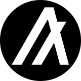</p> ](https://coinmarketcap.com/currencies/algorand/) ALGO (Algorand) - Other options: Polygon ([MATIC](https://coinmarketcap.com/currencies/polygon/)), Polkadot ([DOT](https://coinmarketcap.com/currencies/polkadot-new/)) <br clear='all'> - Probably not Aleo, since it requires knowing of zero-knowledge proofs to really understand it ## Zero-knowledge proofs - We saw it a bit, but didn't go into detail - It's very math-heavy, and would require a different set of pre-reqs
# Looking Forward
<h2> Bitcoin (<a href="https://coinmarketcap.com/currencies/bitcoin/">BTC</a>) <br clear='all'></h2> - Pros - It started this whole field - High value for one Bitcoin - Cons - You can't do much other than transfer funds - Script language is rather limited - It's kinda boring once you know about more cryptocurrencies - Proof-of-work coins are falling out of favor <h2><p>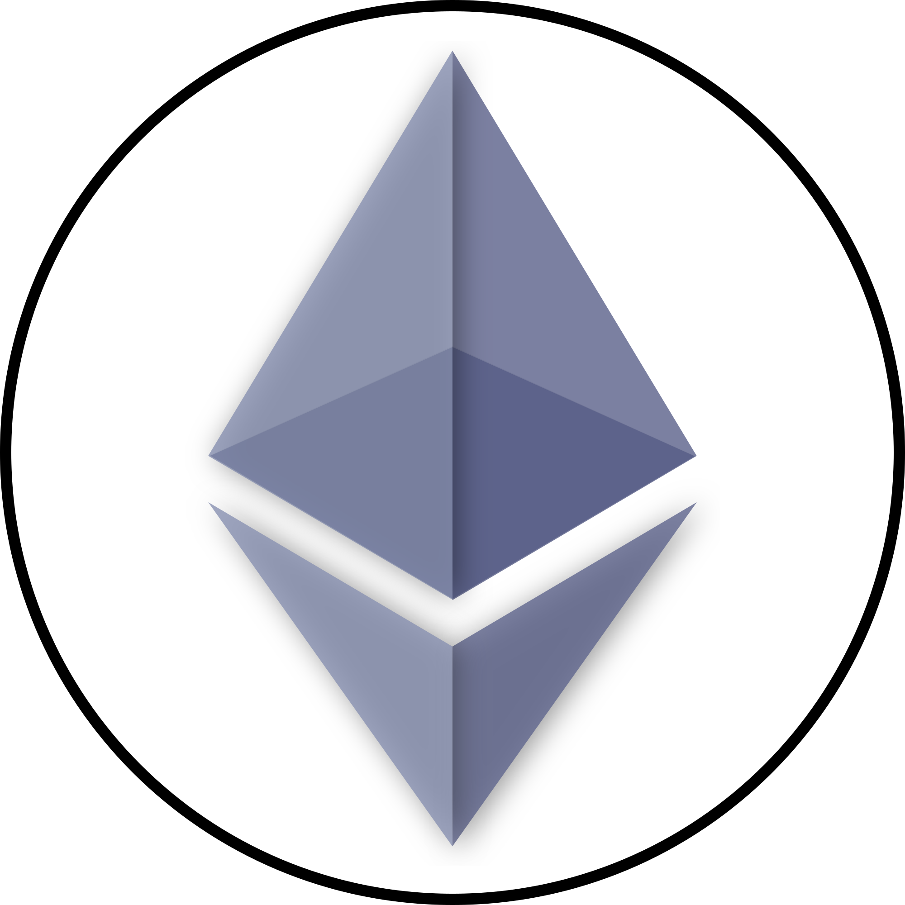</p> Ethereum (<a href="https://coinmarketcap.com/currencies/ethereum/">ETH</a>) Pros<br clear='all'></h2> - It shows what one can do with a modern cryptocurrency - It has a Turing-complete programming language - A lot of developer resources - Including things like stack overflow posts for commonly encountered problems - Well developed development environments - Widely used, well trusted (relatively speaking) <h2> Ethereum (<a href="https://coinmarketcap.com/currencies/ethereum/">ETH</a>) Cons<br clear='all'></h2> - Relatively expensive to interact with - Low transaction rate, although that is likely to change with sharding - Now proof-of-stake - Technology is now 15 years old (although it has been updated) ## Faster Transactions - One's we've seen: - Stellar Lumens ([XLM](https://coinmarketcap.com/currencies/stellar/)): 1k TPS <br clear='all'> - <p>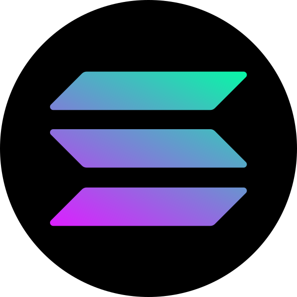</p> Solana ([SOL](https://coinmarketcap.com/currencies/solana/)): 50k TPS <br clear='all'> - (And Ethereum, once the switch to PoS is all completed) - Both are meant to have the same features as Ethereum (smart contracts, etc.) ## More features - One's we've seen: - Polygon ([MATIC](https://coinmarketcap.com/currencies/polygon/)) <br clear='all'> - Polkadot ([DOT](https://coinmarketcap.com/currencies/polkadot-new/)) <br clear='all'> - Both have many more features than Ethereum - Creation of additional chains, native interaction with multiple blockchains - Plus they are faster as well ## Better GUIS - <p>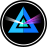</p> Beam ([BEAM](https://coinmarketcap.com/currencies/beam/)) GUI:<br clear='all'> <p>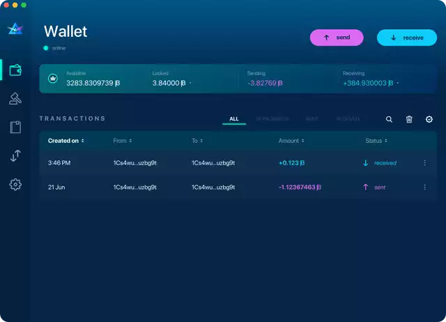</p> Image from [Beam's home page](https://beam.mw/) ## Different development languages - Ethereum has Solidity, of course (and others) <br clear='all'> - Polkadot uses Rust <br clear='all'> - Solana uses C, C++, and Rust <br clear='all'> - Polygon uses Javascript and Solidity <br clear='all'> - <img src="images/logos/atom-coin-symbol.svg" class="cclogo"> Cosmos uses Go <br clear='all'> - Many of the newer cryptocurrencies use lesser known languages (Erlang, Vue, Michelson, etc.) ## Is buying a miner worth it? - Numbers as of spring 2025 - A high-end graphics card uses about `$`1 per day in electrical costs and generates `$`0.80 in cryptocurrency profit - It's worth it if you don't pay for your electricity usage - A Bitcoin ASIC miner, such as the [Avalon 1166 miner](https://canaan.io/product/a1166pro-s-75t), uses about `$`9 in electrical costs and generates maybe half that in profit - This can be profitable at scale, when electricity is cheap, miners are cheap, and/or when the heat generated is used for something else ## Where is the field going - If we could predict this, we'd all be rich on Bitcoin - Vitalik Buterin, the creator of Ethereum, has a [blog](https://vitalik.ca/) - [Reddit post: Best crypto life hacks](https://www.reddit.com/r/CryptoCurrency/comments/rtlsoi/best_lifehacks_in_crypto_that_beginners_should/) - Reddit post: How I accumulated my wealth by looking at pages 10 and beyond on Coingecko - The [original post](https://www.reddit.com/r/CryptoCurrency/comments/u5je3f/how_i_accumulated_my_wealth_by_looking_at_pages/) was deleted, but is available on [archive.org](https://web.archive.org/web/20220417124008/https://www.reddit.com/r/CryptoCurrency/comments/u5je3f/how_i_accumulated_my_wealth_by_looking_at_pages/) - This is, of course, if it can ever get past all the scams and thefts... <h2 class="r-fit-text">Want to start a cryptocurrency?</h2> - Starting it is easy - Make a ERC-20 token or fork existing source code - Getting people to trust it is *hard* - There are 100 coins created *each day* -- what will make yours stand out? - You need something different that fills a new niche - That probably means a new code base, not an ERC-20 token - And a *lot* of patience to get people to adopt it - (If you do this, let me know!)
# Looking Backward
## Course Objectives - Understand the theoretical aspects of cryptocurrency - Understand the basics of blockchain in general, and the details of a selected number of blockchains - Understand the uses of cryptocurrency and blockchain beyond that as a form of money - Understand the policy, ethical, legal, and tax implications of cryptocurrency - Be able to develop programs for a specific Blockchain - Implement a fully working modern cryptocurrency ## 40 Cryptocurrencies studied [ <img src="../slides/images/logos/atom-coin-symbol.svg" class="cclogomed" alt="atom logo"> ](https://coinmarketcap.com/currencies/cosmos/) [ ](https://coinmarketcap.com/currencies/anchorust/) [ ](https://coinmarketcap.com/currencies/beam/) [ ](https://coinmarketcap.com/currencies/bitcoin/) [ ](https://coinmarketcap.com/currencies/bitcoin-gold/) [ <p>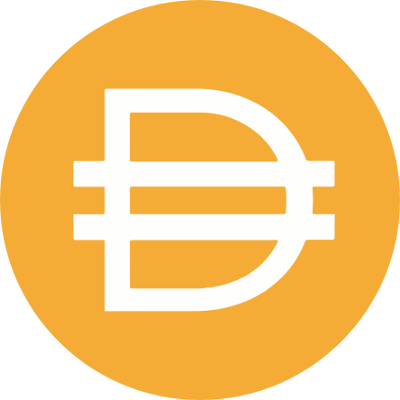</p> ](https://coinmarketcap.com/currencies/multi-collateral-dai/) [ ](https://coinmarketcap.com/currencies/polkadot-new/) [ ](https://coinmarketcap.com/currencies/ergo/) [ <p>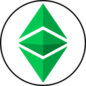</p> ](https://coinmarketcap.com/currencies/ethereum-classic/) [ ](https://coinmarketcap.com/currencies/ethereum/) [ ](https://coinmarketcap.com/currencies/fei-usd/) [ ](https://coinmarketcap.com/currencies/filecoin/) [ ](https://coinmarketcap.com/currencies/firo/) [ ](https://coinmarketcap.com/currencies/frax/) [ ](https://coinmarketcap.com/currencies/juno/) [ ](https://coinmarketcap.com/currencies/terra-luna/) [ ](https://coinmarketcap.com/currencies/polygon/) [ <p>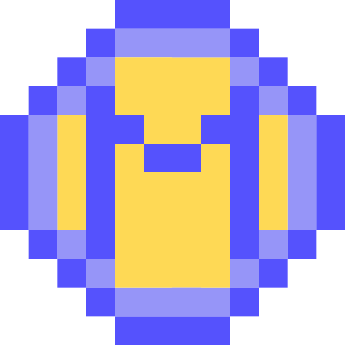</p> ](https://coinmarketcap.com/currencies/magic-internet-money/) [ <p>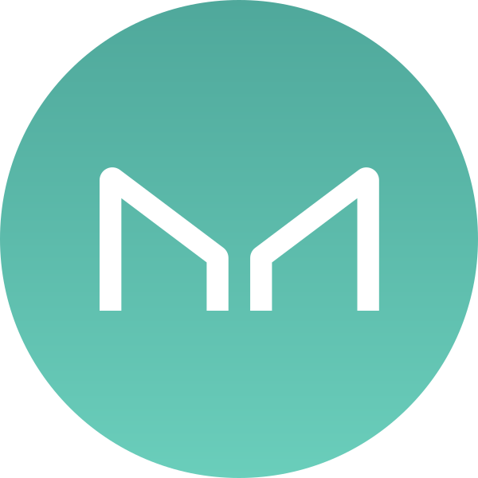</p> ](https://coinmarketcap.com/currencies/maker/) [ ](https://coinmarketcap.com/currencies/neoxa/) [ ](https://coinmarketcap.com/currencies/namecoin/) [ ](https://coinmarketcap.com/currencies/peercoin/) [ ](https://coinmarketcap.com/currencies/ravencoin/) [ <p>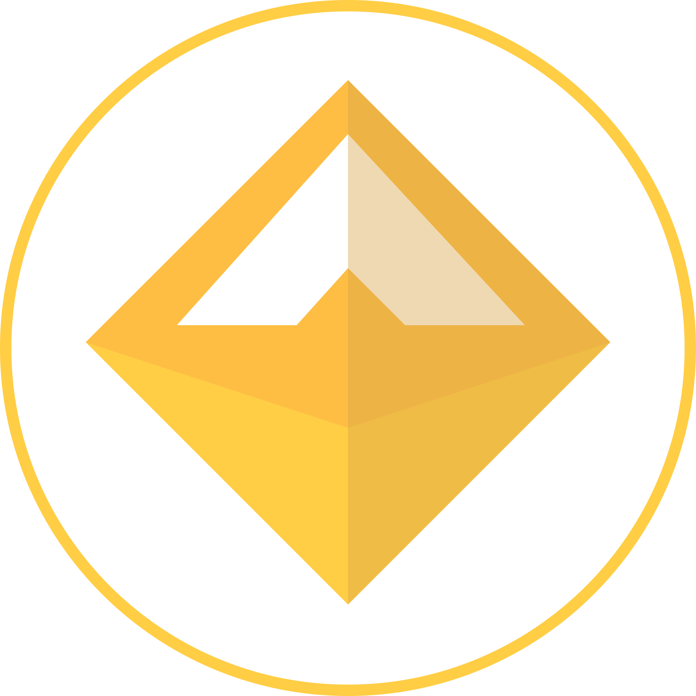</p> ](https://coinmarketcap.com/currencies/single-collateral-dai/) [ ](https://coinmarketcap.com/currencies/shiba-inu/) [ ](https://coinmarketcap.com/currencies/solana/) [ <p>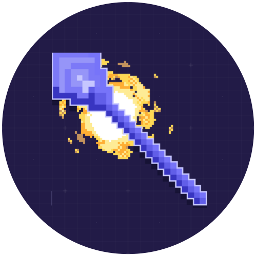</p> ](https://coinmarketcap.com/currencies/spell-token/) [ <p>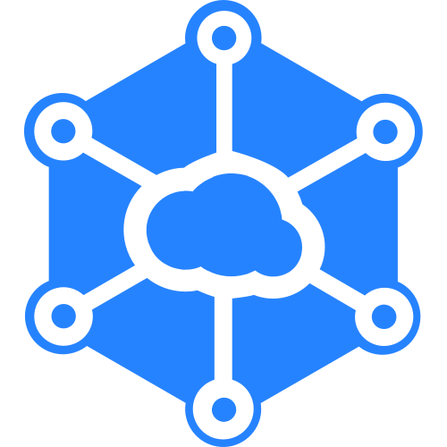</p> ](https://coinmarketcap.com/currencies/storj/) [ <p>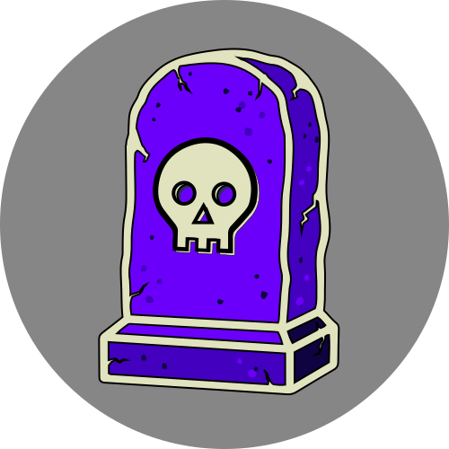</p> ](https://coinmarketcap.com/currencies/tomb/) [ ](https://coinmarketcap.com/currencies/tribe/) [ <img src="../slides/images/logos/usdc-coin-symbol.svg" class="cclogomed" alt="usdc logo"> ](https://coinmarketcap.com/currencies/usd-coin/) [ ](https://coinmarketcap.com/currencies/algorand/) [ <p>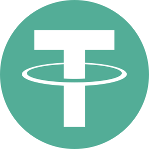</p> ](https://coinmarketcap.com/currencies/tether/) [ <p>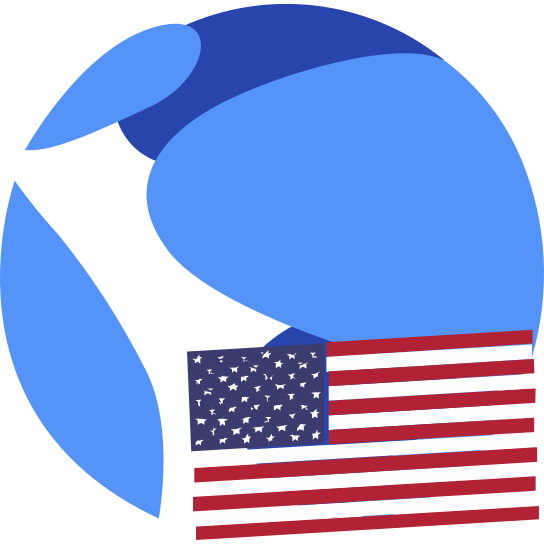</p> ](https://coinmarketcap.com/currencies/terrausd/) [ ](https://coinmarketcap.com/currencies/wrapped-bitcoin/) [ <p>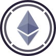</p> ](https://coinmarketcap.com/currencies/weth/) [ ](https://coinmarketcap.com/currencies/stellar/) [ ](https://coinmarketcap.com/currencies/petrodollar/) [ ](https://coinmarketcap.com/currencies/primecoin/) [ <img src="../slides/images/logos/zec-coin-symbol.svg" class="cclogomed" alt="zec logo"> ](https://coinmarketcap.com/currencies/zcash/) <!-- .slide: class="cclogo-slide" --> ## 50 Cryptocurrencies created <img src="https://www.cs.virginia.edu/~asb2t/cclogos/ac.png" class="cclogosmall" alt="ac logo"> <img src="https://www.cs.virginia.edu/~asb2t/cclogos/ad.png" class="cclogosmall" alt="ad logo"> <img src="https://www.cs.virginia.edu/~asb2t/cclogos/alc.png" class="cclogosmall" alt="alc logo"> <img src="https://www.cs.virginia.edu/~asb2t/cclogos/atc.png" class="cclogosmall" alt="atc logo"> <img src="https://www.cs.virginia.edu/~asb2t/cclogos/bald.png" class="cclogosmall" alt="bald logo"> <img src="https://www.cs.virginia.edu/~asb2t/cclogos/bb.png" class="cclogosmall" alt="bb logo"> <img src="https://www.cs.virginia.edu/~asb2t/cclogos/ccc.png" class="cclogosmall" alt="ccc logo"> <img src="https://www.cs.virginia.edu/~asb2t/cclogos/cc.png" class="cclogosmall" alt="cc logo"> <img src="https://www.cs.virginia.edu/~asb2t/cclogos/cmax.png" class="cclogosmall" alt="cmax logo"> <img src="https://www.cs.virginia.edu/~asb2t/cclogos/coo.png" class="cclogosmall" alt="coo logo"> <img src="https://www.cs.virginia.edu/~asb2t/cclogos/cow.png" class="cclogosmall" alt="cow logo"> <img src="https://www.cs.virginia.edu/~asb2t/cclogos/crc.png" class="cclogosmall" alt="crc logo"> <img src="https://www.cs.virginia.edu/~asb2t/cclogos/ddc.png" class="cclogosmall" alt="ddc logo"> <img src="https://www.cs.virginia.edu/~asb2t/cclogos/eyc.png" class="cclogosmall" alt="eyc logo"> <img src="https://www.cs.virginia.edu/~asb2t/cclogos/fb.png" class="cclogosmall" alt="fb logo"> <img src="https://www.cs.virginia.edu/~asb2t/cclogos/flar.png" class="cclogosmall" alt="flar logo"> <img src="https://www.cs.virginia.edu/~asb2t/cclogos/fm.png" class="cclogosmall" alt="fm logo"> <img src="https://www.cs.virginia.edu/~asb2t/cclogos/gcc.png" class="cclogosmall" alt="gcc logo"> <img src="https://www.cs.virginia.edu/~asb2t/cclogos/gmm.png" class="cclogosmall" alt="gmm logo"> <img src="https://www.cs.virginia.edu/~asb2t/cclogos/guga.png" class="cclogosmall" alt="guga logo"> <img src="https://www.cs.virginia.edu/~asb2t/cclogos/hcc.png" class="cclogosmall" alt="hcc logo"> <img src="https://www.cs.virginia.edu/~asb2t/cclogos/hwc.png" class="cclogosmall" alt="hwc logo"> <img src="https://www.cs.virginia.edu/~asb2t/cclogos/hyrx.png" class="cclogosmall" alt="hyrx logo"> <img src="https://www.cs.virginia.edu/~asb2t/cclogos/imc.png" class="cclogosmall" alt="imc logo"> <img src="https://www.cs.virginia.edu/~asb2t/cclogos/invi.png" class="cclogosmall" alt="invi logo"> <img src="https://www.cs.virginia.edu/~asb2t/cclogos/kz.png" class="cclogosmall" alt="kz logo"> <img src="https://www.cs.virginia.edu/~asb2t/cclogos/lec.png" class="cclogosmall" alt="lec logo"> <img src="https://www.cs.virginia.edu/~asb2t/cclogos/llep.png" class="cclogosmall" alt="llep logo"> <img src="https://www.cs.virginia.edu/~asb2t/cclogos/lulu.png" class="cclogosmall" alt="lulu logo"> <img src="https://www.cs.virginia.edu/~asb2t/cclogos/mpc.png" class="cclogosmall" alt="mpc logo"> <img src="https://www.cs.virginia.edu/~asb2t/cclogos/npc.png" class="cclogosmall" alt="npc logo"> <img src="https://www.cs.virginia.edu/~asb2t/cclogos/palm.png" class="cclogosmall" alt="palm logo"> <img src="https://www.cs.virginia.edu/~asb2t/cclogos/paw.png" class="cclogosmall" alt="paw logo"> <img src="https://www.cs.virginia.edu/~asb2t/cclogos/pkap.png" class="cclogosmall" alt="pkap logo"> <img src="https://www.cs.virginia.edu/~asb2t/cclogos/psd.png" class="cclogosmall" alt="psd logo"> <img src="https://www.cs.virginia.edu/~asb2t/cclogos/revr.png" class="cclogosmall" alt="revr logo"> <img src="https://www.cs.virginia.edu/~asb2t/cclogos/rpd.png" class="cclogosmall" alt="rpd logo"> <img src="https://www.cs.virginia.edu/~asb2t/cclogos/rtl.png" class="cclogosmall" alt="rtl logo"> <img src="https://www.cs.virginia.edu/~asb2t/cclogos/sbc.png" class="cclogosmall" alt="sbc logo"> <img src="https://www.cs.virginia.edu/~asb2t/cclogos/slop.png" class="cclogosmall" alt="slop logo"> <img src="https://www.cs.virginia.edu/~asb2t/cclogos/smkc.png" class="cclogosmall" alt="smkc logo"> <img src="https://www.cs.virginia.edu/~asb2t/cclogos/syph.png" class="cclogosmall" alt="syph logo"> <img src="https://www.cs.virginia.edu/~asb2t/cclogos/tbc.png" class="cclogosmall" alt="tbc logo"> <img src="https://www.cs.virginia.edu/~asb2t/cclogos/tc.png" class="cclogosmall" alt="tc logo"> <img src="https://www.cs.virginia.edu/~asb2t/cclogos/top.png" class="cclogosmall" alt="top logo"> <img src="https://www.cs.virginia.edu/~asb2t/cclogos/tpc.png" class="cclogosmall" alt="tpc logo"> <img src="https://www.cs.virginia.edu/~asb2t/cclogos/vb.png" class="cclogosmall" alt="vb logo"> <img src="https://www.cs.virginia.edu/~asb2t/cclogos/wfy.png" class="cclogosmall" alt="wfy logo"> <img src="https://www.cs.virginia.edu/~asb2t/cclogos/xkcd.png" class="cclogosmall" alt="xkcd logo"> <img src="https://www.cs.virginia.edu/~asb2t/cclogos/zsib.png" class="cclogosmall" alt="zsib logo"> <!-- .slide: class="cclogo-slide" --> ## Cryptocurrencies studied (1/7) - Many coins appeared in multiple places - Only the most relevant slide set is listed here - Studied throughout the semester: - [ ](https://coinmarketcap.com/currencies/bitcoin/) Bitcoin ([BTC](https://coinmarketcap.com/currencies/bitcoin/))<br clear='all'> - [ ](https://coinmarketcap.com/currencies/ethereum/) Ethereum ([ETH](https://coinmarketcap.com/currencies/ethereum/))<br clear='all'> - [ ](https://coinmarketcap.com/currencies/ravencoin/) Ravencoin ([RVN](https://coinmarketcap.com/currencies/ravencoin/))<br clear='all'> <!-- .slide: class="cclogo-slide" --> ## Cryptocurrencies studied (2/7) - From [Mining](mining.html#/), Proof-of-$X$: - [ ](https://coinmarketcap.com/currencies/filecoin/) Filecoin ([FIL](https://coinmarketcap.com/currencies/filecoin/)) <br clear='all'> - [ ](https://coinmarketcap.com/currencies/neoxa/) Neoxa ([NEOX](https://coinmarketcap.com/currencies/neoxa/)) <br clear='all'> - [ ](https://coinmarketcap.com/currencies/peercoin/) Peercoin ([PPC](https://coinmarketcap.com/currencies/peercoin/)) <br clear='all'> - [ ](https://coinmarketcap.com/currencies/storj/) Storj ([STORJ](https://coinmarketcap.com/currencies/storj/)) <br clear='all'> - [ ](https://coinmarketcap.com/currencies/primecoin/) Primecoin ([XPM](https://coinmarketcap.com/currencies/primecoin/)) <br clear='all'> <!-- .slide: class="cclogo-slide" --> ## Cryptocurrencies studied (3/7) - From [Mining](mining.html#/), Forks & Orphan Nodes and also Attacks: - [ ](https://coinmarketcap.com/currencies/bitcoin-gold/) Bitcoin Gold ([BTG](https://coinmarketcap.com/currencies/bitcoin-gold/)) <br clear='all'> - [ ](https://coinmarketcap.com/currencies/ergo/) Ergo ([ERG](https://coinmarketcap.com/currencies/ergo/)) <br clear='all'> - [ ](https://coinmarketcap.com/currencies/ethereum-classic/) Ethereum Classic ([ETC](https://coinmarketcap.com/currencies/ethereum-classic/)) <br clear='all'> - [ ](https://coinmarketcap.com/currencies/namecoin/) Namecoin ([NMC](https://coinmarketcap.com/currencies/namecoin/)) <br clear='all'> - From [Tokens](tokens.html#/): - [ ](https://coinmarketcap.com/currencies/shiba-inu/)Shib Inu ([SHIB](https://coinmarketcap.com/currencies/shiba-inu/)) <br clear='all'> - [ ](https://coinmarketcap.com/currencies/weth/) Wrapped Ethereum ([WETH](https://coinmarketcap.com/currencies/weth/)) <br clear='all'> <!-- .slide: class="cclogo-slide" --> ## Cryptocurrencies studied (4/7) - From [Consensus](consensus.html#/): - [ <img src="../slides/images/logos/atom-coin-symbol.svg" alt="atom logo"> ](https://coinmarketcap.com/currencies/cosmos/) Cosmos ([ATOM](https://coinmarketcap.com/currencies/cosmos/)), then called Tendermint <br clear='all'> - From [Blockchain Applications](applications.html#/): - [ ](https://coinmarketcap.com/currencies/juno/) Juno ([JUNO](https://coinmarketcap.com/currencies/juno/)) <br clear='all'> - From [Stablecoins](stablecoins.html#/), collateralized & centralized: - [ <img src="../slides/images/logos/usdc-coin-symbol.svg" alt="usdc logo"> ](https://coinmarketcap.com/currencies/usd-coin/) USD Coin ([USDC](https://coinmarketcap.com/currencies/usd-coin/)) <br clear='all'> - [ ](https://coinmarketcap.com/currencies/tether/) Tether ([USDT](https://coinmarketcap.com/currencies/tether/)) <br clear='all'> - From [Stablecoins](stablecoins.html#/), uncollateralized & centralized: - [ ](https://coinmarketcap.com/currencies/petrodollar/) PetroDollar ([XPD](https://coinmarketcap.com/currencies/petrodollar/)) <br clear='all'> <!-- .slide: class="cclogo-slide" --> ## Cryptocurrencies studied (5/7) - From [Stablecoins](stablecoins.html#/), collateralized & decentralized: - [ ](https://coinmarketcap.com/currencies/multi-collateral-dai/) Dai ([DAI](https://coinmarketcap.com/currencies/multi-collateral-dai/)), now [ ](https://coinmarketcap.com/currencies/multi-collateral-dai/) USDS ([USDS](https://coinmarketcap.com/currencies/multi-collateral-dai/)) <br clear='all'> - [ ](https://coinmarketcap.com/currencies/maker/) Maker ([MKR](https://coinmarketcap.com/currencies/maker/)) <br clear='all'> - [ ](https://coinmarketcap.com/currencies/single-collateral-dai/) Sai ([SAI](https://coinmarketcap.com/currencies/single-collateral-dai/)) <br clear='all'> - From [Stablecoins](stablecoins.html#/), uncollateralized & decentralized: - [ ](https://coinmarketcap.com/currencies/fei-usd/) Fei ([FEI](https://coinmarketcap.com/currencies/fei-usd/)) <br clear='all'> - [ ](https://coinmarketcap.com/currencies/frax/) Frax ([FRAX](https://coinmarketcap.com/currencies/frax/)) <br clear='all'> - [ ](https://coinmarketcap.com/currencies/tomb/) Tomb ([TOMB](https://coinmarketcap.com/currencies/tomb/)) <br clear='all'> - [ ](https://coinmarketcap.com/currencies/tribe/) Tribe ([TRIBE](https://coinmarketcap.com/currencies/tribe/)) <br clear='all'> <!-- .slide: class="cclogo-slide" --> ## Cryptocurrencies studied (6/7) - From [Stablecoins](stablecoins.html#/), LUNA / USTC case study: - [ ](https://coinmarketcap.com/currencies/anchorust/) Anchor USD ([AUST](https://coinmarketcap.com/currencies/anchorust/)) <br clear='all'> - [ <img src="../slides/images/logos/lunac-coin-symbol.svg#cclogomed" alt="luna logo"> ](https://coinmarketcap.com/currencies/terra-luna/) Luna Classic ([LUNA/C](https://coinmarketcap.com/currencies/terra-luna/)) - [ ](https://coinmarketcap.com/currencies/magic-internet-money/) Magic Internet Money ([MIM](https://coinmarketcap.com/currencies/magic-internet-money/)) <br clear='all'> - [ ](https://coinmarketcap.com/currencies/spell-token/) Spell ([SPELL](https://coinmarketcap.com/currencies/spell-token/)) <br clear='all'> - [ ](https://coinmarketcap.com/currencies/terrausd/) TerraUSD ([USTC](https://coinmarketcap.com/currencies/terrausd/)) <br clear='all'> - From [Zero-knowledge proofs](znps.html#/): - [ ](https://coinmarketcap.com/currencies/firo/) Firo ([FIRO](https://coinmarketcap.com/currencies/firo/)) <br clear='all'> - [ <img src="../slides/images/logos/zec-coin-symbol.svg" alt="zec logo"> ](https://coinmarketcap.com/currencies/zcash/) ZCash ([ZEC](https://coinmarketcap.com/currencies/zcash/)) <br clear='all'> <!-- .slide: class="cclogo-slide" --> ## Cryptocurrencies studied (7/7) - From [Scalability](scalability.html#/): - [ ](https://coinmarketcap.com/currencies/polkadot-new/) Polkadot ([DOT](https://coinmarketcap.com/currencies/polkadot-new/)) <br clear='all'> - [ ](https://coinmarketcap.com/currencies/polygon/) Polygon ([MATIC](https://coinmarketcap.com/currencies/polygon/)) <br clear='all'> - [ ](https://coinmarketcap.com/currencies/solana/) Solana ([SOL](https://coinmarketcap.com/currencies/solana/)) <br clear='all'> - [ ](https://coinmarketcap.com/currencies/wrapped-bitcoin/) Wrapped Bitcoin ([WBTC](https://coinmarketcap.com/currencies/wrapped-bitcoin/)) <br clear='all'> - [ ](https://coinmarketcap.com/currencies/stellar/) Stellar Lumens ([XLM](https://coinmarketcap.com/currencies/stellar/)) <br clear='all'> - Did not get to this semester: - [ ](https://coinmarketcap.com/currencies/algorand/) Algorand ([ALGO](https://coinmarketcap.com/currencies/algorand/)) <br clear='all'> - From [Conclusions](conclusions.html#/) (this slide set): - [ ](https://coinmarketcap.com/currencies/beam/) Beam ([BEAM](https://coinmarketcap.com/currencies/beam/)) <br clear='all'> ## Graph of fees  This is from our daily announcements lecture set <h2>HW comments</h2> <table class="transparent"> <tr><td style="width:45%"> <p>"Small" homeworks</p> <ul> <li>HW S1: Google form</li> <li>HW S2: Bitcoin whitepaper</li> <li>HW S3: Ethereum white-paper</li> <li>HW S4: Private Ethereum blockchain</li> <li>HW S5: dApp Introduction</li> </ul> </td><td style="width:10%"></td><td class="top" style="width:45%"> <p>Programming homeworks</p> <ul> <li>HW P1: Overview</li> <li>HW P2: ECDSA</li> <li>HW P3: BTC parser</li> <li>HW P4: Bitcoin scripting</li> <li>HW P5: dApp Gradebook</li> <li>HW P6: dApp Tokens</li> <li>HW P7: dApp Auction</li> <li>HW P8: DEX</li> <li>HW P9: DAO & web3</li> <li>HW P10: Arbitrage trading</li> <li>HW P11: MetaMask</li> </ul> </td></tr></table> </section> ## Topics we didn't cover - Mining algorithms, CUDA (mining on a GPU) - P2P networking (that's more in the realm of a Networks class) - Multi-blockchain wallets and how they work - Mining pools - More modern cryptocurrency systems, such as Algorand - This column of slides is meant to be very brief ## What didn't work well - Debugging Solidity programs - Although I think it went about as well as it could have gone... - General Remix & geth issues - BTC scripting (but it worked, at least!) - My slowness in grading & regrading - Arbitrage was rougher than anticipated (although overall it worked well) - Email ticket response slowness ## What did work well - The course blockchain and the explorer - The lecture topics - The homeworks, and how they built upon each other over the course of the semester - The few HWs from last time that had issues didn't have those issues this semester - Arbitrage doesn't fall into that category... - TAs who took the class! And lots of office hours - Being able to have cryptocurrency memes as the first daily announcements slide of the day ## Did I push too hard? - I feel that the frustration was more caused by other issues than the raw work load: - Problems debugging Solidity - Remix acting up - Factoring that out, was it too hard? ## Changes for next time - This course is moving to once a year rather than once a semester - Restart the blockchain, and with a different chain ID - Same course structure, same homeworks - But fix BTC scripting. Somehow. - See if BTC scripting can be done in a way that does not rely on the BTC test network - Add an advanced cryptocurrency lecture, such as Algorand, Aleo, Polygon, or Polkadot - More diagrams in the lectures ## Let me know your comments! - Please send us your feedback! - Either by e-mail or anonymously or on the course surveys - Please fill out the course surveys! <h2>Have a great break!</h2> <img class="stretch" src="https://www.cs.virginia.edu/~asb2t/laststrip.png" alt="calvin and hobbes" style="width:100%;background-color:white">